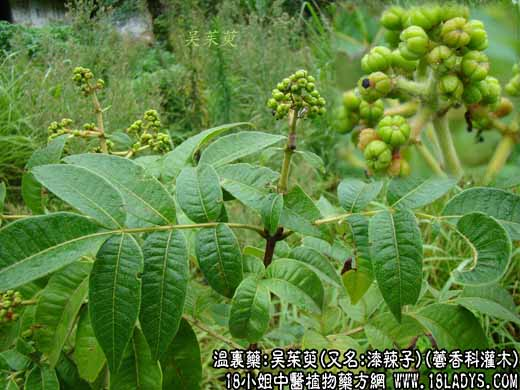

【中药概述】
吴茱萸(又名:漆辣子)为芸香科灌木吴茱萸的将成熟果实。辛、苦，热；有小毒。归肝、脾、胃经。
1．温中止痛：用于脘腹冷痛，虚寒滞痛、腹痛、疝痛等诸痛，如（伤寒论<吴茱萸汤>）。
2．疏肝止呕：用于肝胃不和而致呕吐涎沫，胃寒呕吐等，如<左金丸>。
3．散寒：用于脾肾阳虚的久泻，五更泄泻等，如<四神丸>、（本事方<五味子散>）。
【药效鉴别】
吴茱萸为厥阴经主药，温中散寒之功与干姜相近。吴茱萸偏于温肝。
【临证应用】
1.外用醋调敷足心，可引火下行，治疗口舌生疮等。
2.湿疹：吴茱萸50g 乌贼骨35g 硫黄10g，研末撒干粉，无渗出液者用蓖麻油或猪油化开调涂，隔日一次。
【药理作用】
有兴奋子宫、镇痛、杀灭猪蛔虫、抑制金黄色葡萄球菌、人结核杆菌、绿脓杆菌的作用，对多种皮肤真菌亦有不同程度抑制作用。
【化学成分】
含吴茱萸烯、罗勒烯及吴茱萸内酯等。
【用量用法】
2——5g，水煎服，或入丸、散剂。外用适量。
【使用注意】
阴虚有热者不宜。